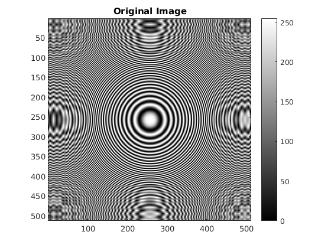
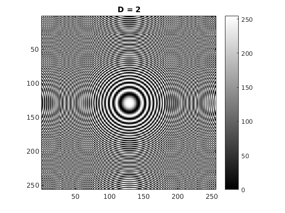
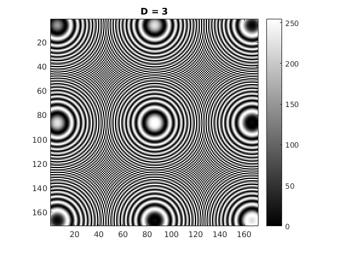
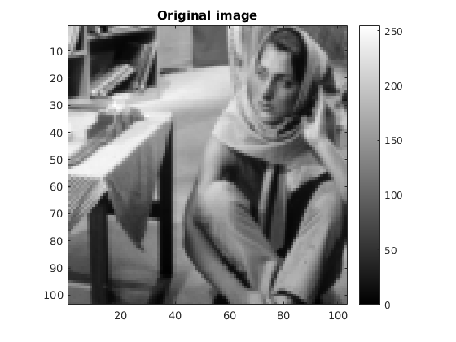
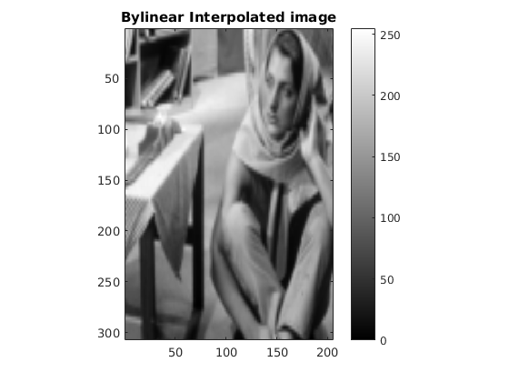
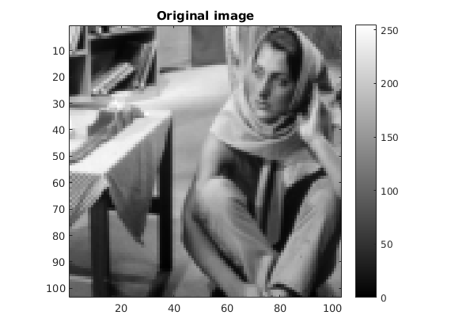
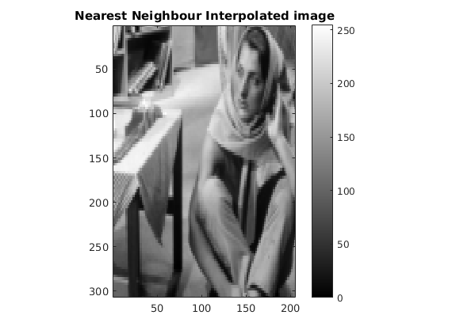

Contents
MyMainScript
myNumOfColors = 256;
colorScale = 0:1/(myNumOfColors-1):1;
myColorScale = [ colorScale' colorScale' colorScale' ];
Shrinking image
tic;
img_1 = imread('../data/circles_concentric.png');
D = 2;
new_img_D2 = myShrinkImageByFactorD(img_1, 2);
new_img_D3 = myShrinkImageByFactorD(img_1, 3);
figure();
imagesc(img_1);
colormap (myColorScale);
title('Original Image');
daspect([1 1 1]);
colorbar;
figure();
imagesc(new_img_D2);
colormap (myColorScale);
title('D = 2');
daspect([1 1 1]);
colorbar;
figure();
imagesc(new_img_D3);
title('D = 3');
colormap (myColorScale);
daspect([1 1 1]);
colorbar;
toc;
Elapsed time is 0.663573 seconds.
  
Enlarging image
tic;
img_2 = imread('../data/barbaraSmall.png');
new_img_2 = myBilinearInterpolation(img_2);
figure();
imagesc(img_2);
title('Original image');
colormap (myColorScale);
daspect([1 1 1]);
colorbar;
figure();
imagesc(new_img_2);
title('Bylinear Interpolated image');
colormap (myColorScale);
daspect([1 1 1]);
colorbar;
toc;
Elapsed time is 0.237526 seconds.
 
nearest nbr
tic;
img_3 = imread('../data/barbaraSmall.png');
new_img_3 = myNearestNeighborInterpolation(img_3);
figure();
imagesc(img_3);
title('Original image');
colormap (myColorScale);
daspect([1 1 1]);
colorbar;
figure();
imagesc(new_img_3);
title('Nearest Neighbour Interpolated image');
colormap (myColorScale);
daspect([1 1 1]);
colorbar;
toc;
save('part1', '-regexp', '^new_img');
Elapsed time is 0.280158 seconds.
 